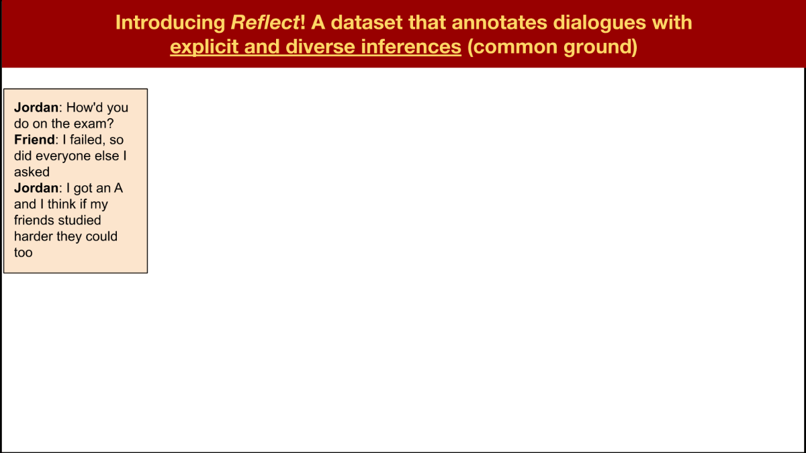
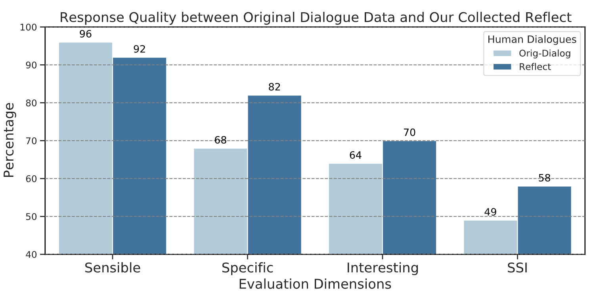
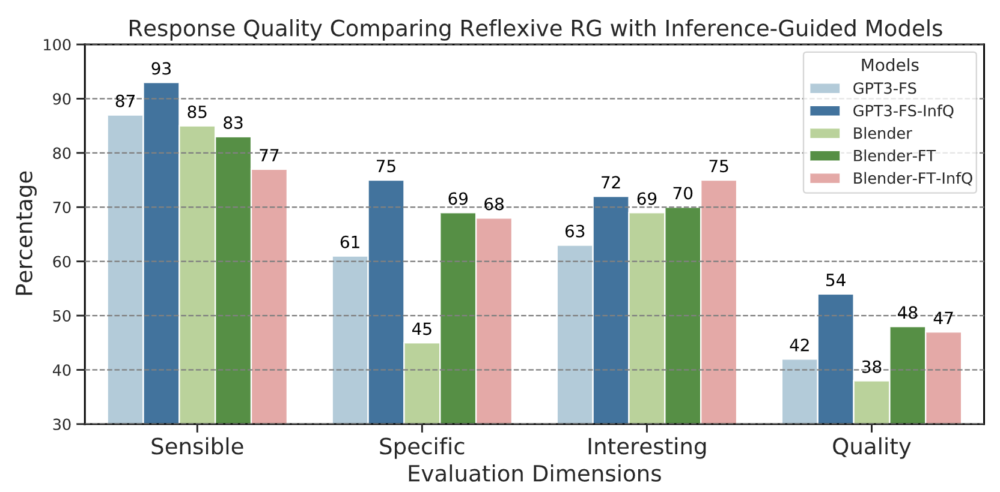
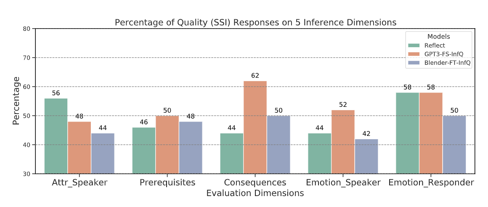

Reflect
Not Reflex: Inference-Based Common Ground Improves Dialogue Response QualityPei Zhou, Hyundong J. Cho, Pegah Jandaghi, Dong-Ho Lee, Bill Yuchen Lin, Jay Pujara, Xiang Ren
Human communication relies on common ground (CG), the mutual knowledge and beliefs shared by participants, to produce coherent and interesting conversations. Existing dialogue models, however, produce generic and dull responses because they act reflexively, both due to the lack of CG in training data and the standard RG training procedure.
We introduce Reflect, a dataset that annotates dialogues with explicit CG (materialized as inferences) and solicits 9k diverse human-generated responses each following one common ground.
We find that incorporating CG helps models such as BlenderBot and GPT-3 generate 30% more quality responses, showing promising benefits to integrating CG into the RG process.
We design a two-stage data collection process by first asking crowdsourcing workers to answer different inference questions eliciting beliefs about common ground (e.g., what is the speaker feeling right now?) We use these QA pairs to approximate various (non-exhaustive) inference dimensions to extend the common ground (e.g., empathy and event causality).
Our second step converts these CG into dialogue responses by asking different workers to write a coherent response based on the answer/inference collected in the first stage. Our collected data Reflect contains 9k diverse responses from 600 dialogue contexts, based on 5 inference dimensions for CG.
We find through extensive human evaluation that Reflect consists of dialogue responses that are on average more specific (20%) and interesting (13%) than the original data, while having slightly lower sensibility (4%) ratings. When comparing the percentages of responses that satisfy all three criteria, i.e., quality responses, we find that there are substantially more (18%) such responses in Reflect than in original data.
After showing that explicitly integrating inferencebased CG helps humans produce more specific and interesting dialogue responses, we now test if this also holds for neural RG models. The figure below shows that simply prompting GPT-3 with CG inference questions boosts the generated response quality by 30% and similarly for fine-tuning BlenderBot on Reflect. More details in paper.
We are curious to find out which inference dimension helps models the most (and which the least)? Here we show that, intriguingly, on some dimensions, GPT3-FS-InfQ can produce significantly better responses than human responses from Reflect, especially event-based and emotion-based CG about the other speaker.

@inproceedings{zhou2022reflect,
title={Reflect Not Reflex: Inference-Based Common Ground Improves Dialogue Response Quality},
author={Zhou, Pei and Cho, Hyundong J. and Jandaghi, Pegah and Lee, Dong-Ho and Lin, Bill Yuchen and Pujara, Jay and Ren, Xiang},
booktitle={Proceedings of the 2022 Conference on Empirical Methods in Natural Language Processing},
year={2022}
}